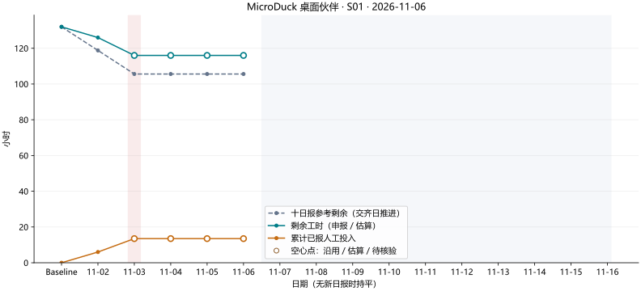

全部团队
MicroDuck 桌面伙伴 · 燃尽图核验
Sprint：S01 · 截止：2026-11-06（含当日）
抓取快照：701d921e8418b32b68b52be2f50670ad5930a2a1
计划 SHA256：6d4d45f66dbe9b7d29aac949a049a6eeddb726f57e4678fd103f7e42d3634d4c
生成于 UTC：2026-11-06T05:32:43.232585+00:00
图表展示可读取的日报进展，异常单独列出。剩余工时缺项沿用最近申报或计划初估；累计投入只加总已报数值，存在缺漏时为不完整合计。空心点表示估算或未通过完整核验，未来日期留空。Day00 为计划基线。
日报使用兼容读取模式，原文和哈希保留。证据或任务完整性等问题不再让整组停止绘图；无法匹配身份、日期、任务或无法读取的数值单独排除。
截至 2026-11-16 完成 10 天日报即可，可提前完成、可间隔提交。目前全员交齐 2 / 10 天（Yan 2 天；Zhang 2 天）。交齐按同一真实日期全员均有可识别日报计算，与内容核验分开；同一人同一日期只计一次。灰线是十日报进度参考，每交齐一天下降一份基线工时，不表示项目应在某个指定日期结束。没有新日报的日期保持上次值，不算每日缺交；水平线只表示没有新增申报。

PNG · SVG · 图中数据 CSV · 严格核验数据 CSV
图中逐日数据（小时）
| 图上序号 | 日期 | 申报/估算剩余 | 累计已报投入 | 当天更新任务数 | 范围内任务数 | 剩余口径 | 投入口径 |
|---|
| 0 | — | 132 | 0.0 | 0 | 44 | baseline | baseline |
| 1 | 2026-11-02 | 126 | 6.0 | 44 | 44 | reported | reported |
| 2 | 2026-11-03 | 116.0 | 13.5 | 44 | 44 | reported | reported |
| 3 | 2026-11-04 | 116.0 | 13.5 | 0 | 44 | carried | reported |
| 4 | 2026-11-05 | 116.0 | 13.5 | 0 | 44 | carried | reported |
| 5 | 2026-11-06 | 116.0 | 13.5 | 0 | 44 | carried | reported |
| 6 | 2026-11-07 | — | — | 0 | 44 | future | future |
| 7 | 2026-11-08 | — | — | 0 | 44 | future | future |
| 8 | 2026-11-09 | — | — | 0 | 44 | future | future |
| 9 | 2026-11-10 | — | — | 0 | 44 | future | future |
| 10 | 2026-11-11 | — | — | 0 | 44 | future | future |
| 11 | 2026-11-12 | — | — | 0 | 44 | future | future |
| 12 | 2026-11-13 | — | — | 0 | 44 | future | future |
| 13 | 2026-11-14 | — | — | 0 | 44 | future | future |
| 14 | 2026-11-15 | — | — | 0 | 44 | future | future |
| 15 | 2026-11-16 | — | — | 0 | 44 | future | future |
reported＝申报数值；carried＝当日无新申报，正常持平；estimated＝含结转估算；partial＝存在缺漏，仅合计已报工时；future＝未来日期。图上序号不等于日报文件的 Day 编号。原始申报仍需人工核查。
严格核验逐日数据（小时，含空值）
| 图上序号 | 日期 | 参考剩余 | 核验剩余 | 累计人工投入 | 状态 | 未交/无效成员 |
|---|
| 0 | — | 132 | 132 | 0.0 | baseline | [] |
| 1 | 2026-11-02 | 118.8 | 126.0 | 6.0 | complete | [] |
| 2 | 2026-11-03 | 105.6 | — | — | incomplete | ['A', 'B'] |
| 3 | 2026-11-04 | 105.6 | — | — | no_submission | [] |
| 4 | 2026-11-05 | 105.6 | — | — | no_submission | [] |
| 5 | 2026-11-06 | 105.6 | — | — | no_submission | [] |
| 6 | 2026-11-07 | — | — | — | future | [] |
| 7 | 2026-11-08 | — | — | — | future | [] |
| 8 | 2026-11-09 | — | — | — | future | [] |
| 9 | 2026-11-10 | — | — | — | future | [] |
| 10 | 2026-11-11 | — | — | — | future | [] |
| 11 | 2026-11-12 | — | — | — | future | [] |
| 12 | 2026-11-13 | — | — | — | future | [] |
| 13 | 2026-11-14 | — | — | — | future | [] |
| 14 | 2026-11-15 | — | — | — | future | [] |
| 15 | 2026-11-16 | — | — | — | future | [] |
绘图采纳与排除明细
| Day | 成员 | 采纳剩余任务数 | 采纳投入任务数 | 整份排除原因 | 单项排除原因 |
|---|
| 1 | A | 22 | 22 | | [] |
| 1 | B | 22 | 22 | | [] |
| 2 | A | 22 | 22 | | [] |
| 2 | B | 22 | 22 | | [] |
异常与范围变更记录
| 级别 | 检查项 | Day / 成员 / 任务 | 说明 / 来源 |
|---|
| warning | UNPINNED_PLAN | — / / | 未锁定计划 SHA256，不能自动识别历史基线被修改；请审查后写入配置。
|
| error | INVALID_REPORT | 2 / A / | A01: 提供证据时必须说明验证方式
燃尽图/daily-scrum/Day02-A.md |
| error | INVALID_REPORT | 2 / B / | B01: 提供证据时必须说明验证方式
燃尽图/daily-scrum/Day02-B.md |
异常 CSV · 完整核验 JSON · 本次抓取的原始日报与计划